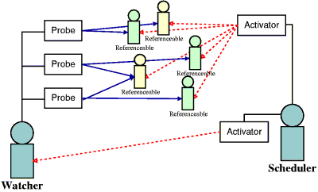

When building a multi-agent systems, it might be necessary to launch hundred of agents. Until now, that implied in MadKit launching hundred of threads, which is extremely resource-consuming. Thus it was not possible to define artificial-like simulations, hybrid systems, etc with the standard Agent class.
In the previous versions we offered a small simulation toolkit, the so-called ReactiveLib, which was a set of classes in the madkit.lib.reactive package. In this library, a standard MadKit agent was encapsulating a small simulation engine. There was numerous design flaws with this library: simulated entities were not MadKit agents (thus having no access to the messaging or agent/group/role API), the visualization mechanisms were hard-coded, the agents homogeneous, etc..
Thus, we wrote from scratch a new engine to permit development of agents that are not associated with a thread, and can be scheduled by an external entity and easily monitored from the outside.
The synchronous engine provides 5 essential building blocks. The following figure shows an illustration of this architecture:
Figure 6.1. Synchronous Engine Example

In the synchronous engine, any agent can be scheduled or monitored. However, this requires direct reference access to the corresponding agents (as synchronous execution or monitoring is achieved through method invocation or direct variable access). As a main feature of MadKit is that an agent developer never manipulates directly other agents by reference (only with the AgentAddress), having direct reference access to any agent would be a major security and stability problem. Thus, we require that a developer writing a agent that will be executed in the synchronous engine declares its intention and allows a direct reference. This is made with a empty Java interface, the ReferenceableAgent, which does not require any method implementation: it is just here for typing "yes, I do accept that the class I'm writing can be manipulated through the synchronous engine".
The Scheduler is a regular MadKit agent. It manages a collection of activators to execute synchronous agents.
This Activator tool class defines a basic scheduling policy. It works in conjunction with the scheduler to get a list of schedulable agent. An activator is configured according to a group and a role. On update() operation, it dynamically discovers the implementation classes of the agents having the given group and roles. These direct references can be used afterwards to directly invoke operations on the agents. Subclasses have to implement the execute() abstract operation, which might be invoked by a Scheduler agent.
The principle of the Watcher agent resembles the Scheduler one. A Watcher manages a list of probes, and combines their input in something meaningful. But in contrast with the scheduler, a watcher is not a threaded agent and have to be executed from the outside, with an associated scheduler.
The Probe tool class is the basic code for exploring code of a ReferenceableAgent agent. It is configured with a group, and a role. On update() operation, it dynamically discovers the implementation classes of the agents having the given group and roles. These direct references can be used afterwards to directly invoke operations on the agents. Subclasses have to implement the actual probing mechanism. This mechanism is close to the probe mechanism implemented in other platforms, like Swarm or Cormas
We will take the example of small ants that walk randomly on the ground.
In this very simple simulation, we will only have one type of agent: the ant. We'll start be defining the agent class
import madkit.kernel.AbstractAgent;
import madkit.kernel.ReferenceableAgent;
public class SmallAnt extends AbstractAgent implements ReferenceableAgent
{
public double x = 0;
public double y = 0;
public void activate()
{
joinGroup("mysimu");
requestRole("mysimu", "ant");
}
public void walk()
{
x=x+(Math.random()-0.5);
y=y+(Math.random()-0.5);
}
}
|
We now have to decide how our small ant will be run. To this end, we're going to implement our own Scheduler and Activator
The activator is the basic bloc of synchronous execution in MadKit. In our example, execution is really simple: we just have to execute the walk() method on our ants
import madkit.kernel.Activator;
public class AntActivator extends Activator
{
public AntActivator(String group, String role)
{
super(group, role);
}
public void execute()
{
for (int i=0; i < agents.length; i++)
((SmallAnt)agents[i]).walk();
}
}
|
In this example, we suppose that the number of ants remain constant. If not, we would have to call update() on the activator.
We will do two things in one agent to keep the code small: launching the ants, and scheduling them. That is not an obligation, and big simulation system will probably an agent specialized in the configuration of launch of a simulation, and distinct from the scheduler.
import madkit.kernel.Scheduler;
public MySchedulerAgent extends Scheduler
{
public void activate()
{
foundGroup("mysimu");
requestRole("mysimu","scheduler");
for (int i = 0; i < 100; i++)
launchAgent(new SmallAnt(),"An ant", false);
}
public void live()
{
AntActivator a1 = new AntActivator("mysimu","ant");
addActivator(a1);
update();
while(true)
{
pause(100);
a1.execute();
}
}
}
|
The live() method is the real thing: we build an instance of our tool class AntActivator and add it to the collection of activators managed by our scheduler. Note that the activators are configured with the group/role mechanism. Then, we call the scheduler update() method which makes the activator gets their agent list according to their configured group and role.
The final part is executing our ants again and again. That's the final while loop were we execute the activator.
Our example is now complete and runs well, but there is a small inconvenience: we can't see anything !
To solve this problem, we could have added some instruction in the ant to trace its behavior, or access it from the scheduler. However, that is not really extensible and hard-coding an observation mechanism could be annoying (what if we want a graphical representation ? and then dump everything in a DBMS ? and then .. ? and everything at the same time ? etc, etc)
The synchronous engine in MadKit introduces a way to observe the system from the outside. It is very similar to the scheduler/activator mechanism.
We would like to have a very simple observer: something that gives us the most extreme points that the ants have reached for each turn.
In this example, we will not build our own probe, although that is something quite easy to do, but just use a generic probe that ship with MadKit in the madkit.lib.simulation package, the NumericProbe, which already implements some basic operations on numeric attributes.
import madkit.lib.simulation.NumericProbe;
import madkit.kernel.Watcher;
public class AntObserver extends Watcher
{
NumericProbe p1;
NumericProbe p2;
public AntObserver()
{
p1=new NumericProbe("x", "mysimu", "ant");
p2=new NumericProbe("y", "mysimu", "ant");
addProbe(p1);
addProbe(p2);
}
public void activate()
{
joinGroup("mysimu");
requestRole("mysimu","observer");
update();
}
public void observeAnts()
{
println("Max x and y reached this turn:");
println(p1.getMax()+" , "+p2.getMax());
}
}
|
In this version of the synchronous engine, the properties that can be discovered by the reflexive probes are only public fields on the agents. A future version will support accessors functions (with the getXXX() pattern).
The only thing left is to run the observer. To this end, we will modify the code in our scheduler to execute the observer in addition to the ants. We won't build another Activator, but just reuse an activator which come with MadKit, the SingleMethodActivator. This activator takes as argument a method name, a group and a role and execute the method that has the given name through reflection. We could have used this one for the ants but we wanted to show how to build an activator.
Our scheduler agent become:
import madkit.kernel.Scheduler;
import madkit.lib.simulation.SingleMethodActivator;
public class MySchedulerAgent extends Scheduler
{
public void activate()
{
foundGroup("mysimu");
requestRole("mysimu","scheduler");
for (int i = 0; i < 100; i++)
launchAgent(new SmallAnt(),"An ant", false);
launchAgent(new AntObserver(),"My observer", true); // a GUI for this one
}
public void live()
{
AntActivator a1 = new AntActivator("mysimu","ant");
SingleMethodActivator a2 = new SingleMethodActivator("observeAnts","mysimu","observer");
addActivator(a1);
addActivator(a2);
update();
while(true)
{
pause(100);
a1.execute();
a2.execute();
}
}
}
|
You just have to start the MySchedulerAgent, it will launch the ants and the observer. You can do this in G-Box mode or with the console booter, as we don't use graphical interfaces for our agents.
For instance, here is a short simulation run in console mode
$ java madkit.platform.console.Booter --config test_tutorial.scm Booting MadKit Kernel ... <Daemon> : MadKit/Aalaadin - by O. Gutknecht and J. Ferber (c) 1997-1999 <Daemon> : version: 1.4 <Daemon> : -------------------- <Daemon> : Please file bug reports on http://www.lirmm.fr/madkit/ <Daemon> : MadKit Agent microKernel is up and running <Daemon> : (My observer) Max x and y reached this turn: <Daemon> : (My observer) 0.4915111386577862 , 0.49222698315252467 <Daemon> : (My observer) Max x and y reached this turn: <Daemon> : (My observer) 0.873452806885152 , 0.9354369551234195 <Daemon> : (My observer) Max x and y reached this turn: <Daemon> : (My observer) 1.2531099361392506 , 1.1749691286640953 <Daemon> : (My observer) Max x and y reached this turn: ... |
This simplistic example does not really show the genericity of the Synchronous Engine. Things are getting really interesting when you have multiple observers show differing point of views on a system, or different groups being scheduled independently, with many agents executed according to their roles, etc..
The bees example in the demo source code shows something more elaborated, while being close to the ant example. For something more complex, see the "TurtleKit" (a StarLogo-like) simulation packs and the corresponding examples.
A final word: the synchronous engine is definitively not restricted to simulations: actually, most of the "classic" agents could be scheduled in synchronous mode by just inheriting from AbstractAgent instead of Agent and having an activator configured on their live() method.